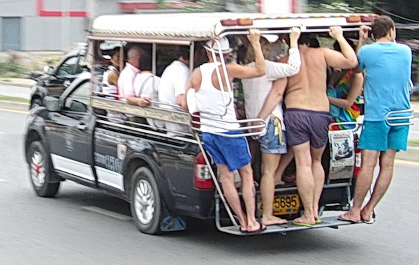

Маршрутка курорта Паттайя - тук-тук

Тук-туками в Паттайе называют маршрутки, которые останавливаются по требованию. Другое название - сонгтео, означает две скамейки. Это не что иное как пикап с двумя скамейками для пассажиров в крытом кузове. Старожилы еще помнят времена, когда сонгтео называли бат-басами, потому что стоимость проезда равнялась один бат. Времена проходят и цены уходят в прошлое. Нынче прокатиться на бат-басе обойдется в десять бат, тоже, в принципе, не дорого.
Что нужно знать о тук-туках
Тук-туки останавливаются по требованию, значит чтобы поймать тук-тук, ты должен поступать по аналогии с такси. Часто водители тук-туков сами сигналят пешеходам, предлагая свои услуги. Остановив тук-тук можешь спросить у водителя идет ли он в нужном тебе направлении.
Предупреждение
Тук-тук имеет два режима работы: "тук-тук тэн бат" и "тэкси". Если в тук-туке много народу и он сигналит всем пешеходам, то он в режиме "тэн бат". Если в тук-туке никто не едет, то, возможно, он такси. Узнать это наверняка можно пообщавшись с водителем примерно следующим набором слов "гоу волкин тэн бат, окей?". Если водитель со вздохом кивнет, значит можно садиться и ехать за 10 бат. Если водитель хочет больше денег, он станет гнуть "вэа ю гоу?".
Чтобы выйти, нужно остановить тук-тук. Некоторые оригиналы под воздействием алкоголя спрыгивают на ходу, но это может печально закончиться. Тук-тук останавливается при нажатии пассажиром на кнопку, издающую резкий и громкий звонок. Кнопки расположены под крышей, поищи их глазами, или посмотри, куда давят твои попутчики чтобы выйти. После того, как ты вышел, пройди вперед, к кабине водителя и отдай ему 10 бат. Лучше иметь без сдачи, водитель может ошибиться при ее подсчете.
В тук-тук помещается от 10 человек и более. Часто нужно усаживаться на скамейки довольно плотно. Сзади на подножке есть стоячие места (в экстренных случаях до 5-6), где любят фотографироваться туристы, приехавшие в Паттайю впервые.

Тук-тук - самый простой, удобный и дешевый способ передвижения по Паттайе. Они ходят часто и круглосуточно. Для того, чтобы эффективно использовать их, однако, надо знать маршруты.
Маршруты тук-туков Паттайи
Есть мнение что никто не знает куда идет тук-тук и нужно ехать на нем, пока вам по пути, а только лишь он свернул не туда, вылазить, рассчитываться и ловить новый. На самом деле тук-туки ходят по маршрутам.
- Малый круг вокруг Южной Паттайи. Против часовой стрелки по улицам Бич Роад (Pattaya Beach Road) -> Улица Южная Паттайя (South Pattaya Road) -> Вторая Улица (Second Road) -> Улица Центральная Паттайя (Central Pattaya Road).
- Большой круг вокруг Южной Паттайи. Вместо поворота на улицу Центральная Паттайя, тук-тук идет дальше по Второй улице и разворачивается у дельфинов.
- Тук-туки на Джомтьен регулярно отправляются от пересечения Южной и Второй. Они идут по Второй, поворачивают на Таппрайя Роад (Thappraya road, Thap Phraya), затем на Джомтьен Бич Роад (Jomtien Beach Road) и идут по ней, пока есть пассажиры, после чего разворачиваются обратно, идет до Волкинг Стрит (Walking Street) и, иногда, дальше по второй, переходя в малый или большой круг.
- Тук-тук по Наклыа (Naklua Road, Na Kluea) ходит от дельфинов в сторону пляжа Вонгамат (Wongamat Beach).
- Тук-тук по Северной улице ходит от дельфинов до Сукхумвит Роад.
- Тук-тук Южной улице ходит от пересечения Южной и Второй до Сукхумвита.
- Тук-тук по Теппразит (Thepprasit Road, Thep Prasit) ходит от пересечения Теппразит и Таппрайя в сторону ночного рынка и обратно.
- Белые тук-туки ходят по Сукхумвиту (Sukhumvit Road).
Есть районы куда не добраться ну тук-туке. Прежде всего это район Пратамнак (Pratumnak, Phra Tam Nak). Если ключевым в поездке для тебя является наличие доступного общественного транспорта, то лучше выбрать отель в другом районе.